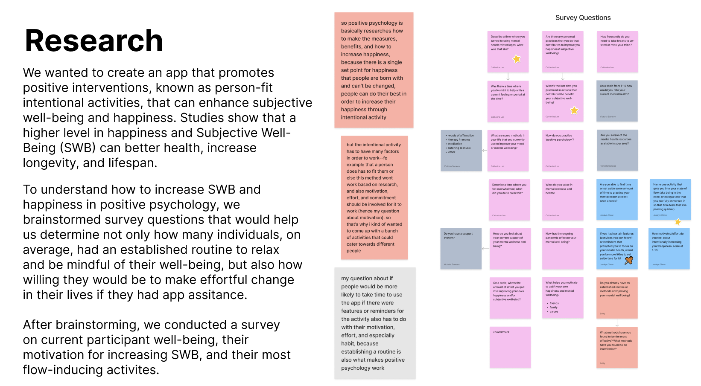
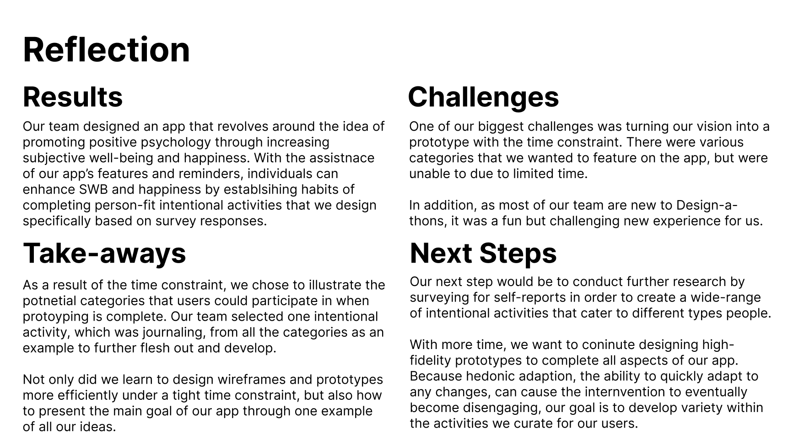
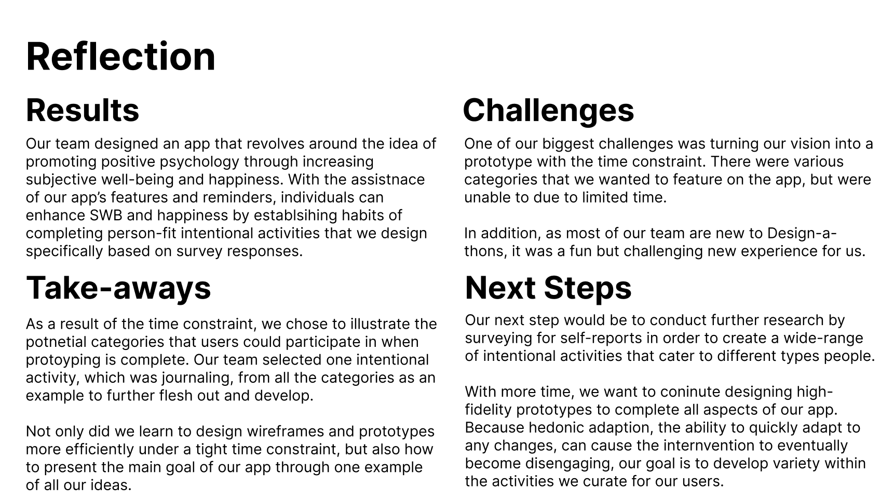
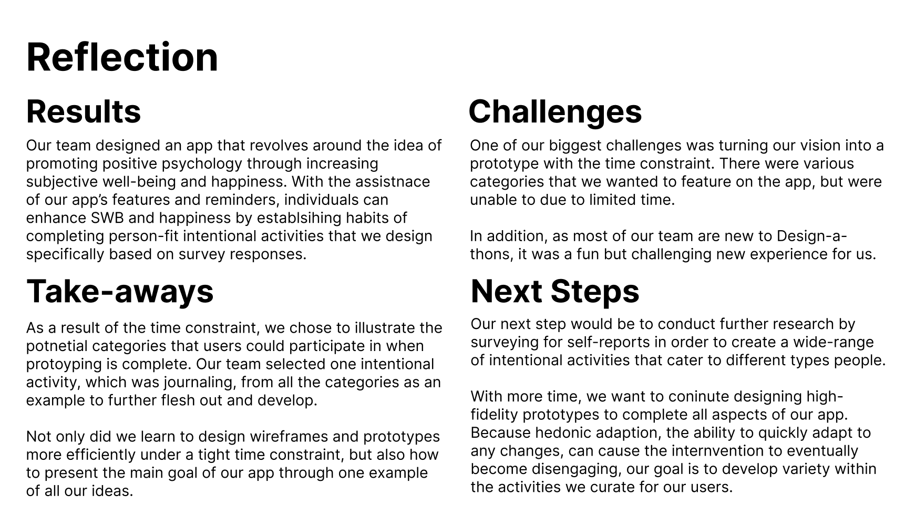

Josalyn Chow
Originally from the Bay Area, I am currenlty a third year undergraduate Psychology major and Business Informations Systems minor at the University of California, Riverside. At UCR,I am part of the University Honors Program, the Life Events Lab, the International Honor Society of Psychology, the Design Club, and the Chinese Student Association. In Spring of 2024, I will be graudating after completing my University Honors Capstone project wiht a Bachelor of Science degree. Some of my hobbies include art and music. After taking art lessons for ten years, I discovered my love for various types of artincluding painting, sketching, designing, and digital drawing. In terms of music, I played the piano for ten years and am interested in learning about music production. While I explore my hobbies as a music producer on the side, I want to pursue a career specifically in the field of UI/UX design and become a UI/UX designer and researcher.
While I have minimal experience in UI/UX design, I am actively working to learn more about the everhcanging field. I currenlty hold the position of Director of Events and Outreach for Psi Chi, the International Honor Soceity of Psychology. In this psychology club, my role is responsible for managing all social events, espeically creating promotional materials for all events and activites that our club hosts. I also help run our club social media accounts and maintain the aesthetics of the Instagram as well as the Twitter. Being Director of EVents and Outreach has given me experience in using softwares such as Procreate and Canva. In addition to my position as DEO, I recently participated in my first Design-a-thon with Rice University. In a team of four, we desinged a seven high-fidelity frames on how to improve health and lifestyle through positive psychology. Our design implemented our research findings on how users can be more motivated to increase their own subjective well-being and happiness. Participating in the Design-a-thon allowed me to gain experience in using Figma. Some skills I have gained from these experiences include design, animation, and aesthetics.
As for the research aspect of UI/UX Design, I have research experience due to my background as a psychology major and working as a research assistant at the Life Events Lab. Not only do we take many classes that focus on research methods and experiments, being a undergradaute research assistnat has taught me how to collect data accurately and ethically. Furthermore, every week, our head researcher holds meetings with all the research assistnats where her graduate students present their projects and research findings. Their presentations provide a great amount of insight on how to be successful researchers. Aside from my lab research experience, I also plan to propose my University Honors Capstone project on desigining a convenient, effiecient, useful, and aesthetically pleasing app/website that can benefit UCR students, which will require extensive research on the preferneces of UCR students. Once the research is conducted and the product is finished, I will be writing a fifteen-page report on my findings and design. The Capstone project will give me first-hand experience on how to be a succesfful UI/UX researcher and designer.
Experience
Academic Tutor
• Introduced and taught new math and language arts concepts to kids K-8
• Demonstrated examples and explanations to students who struggled with grasping material
• Administered achievement tests to students as well as provided homework and classwork grading
Student Intern for Developmental Psychology of Children
• Supervised students in staying focused and on task during class and assisted teacher in grading and organizing
• Evaluated students’ abilities in reading, writing, and math based on California curriculum standards by administering tests
• Designed and implemented English and art lesson plans under the school curriculum of California
Freshmen Mentor
• Advised Freshmen through their first year of high school by introducing the campus organizations, clubs, and activities
• Provided a support system for Freshmen who were struggling with their transition into high school
• Encouraged Freshmen to be active in the school community and participate in events happening on campus
• Led campus tours for students during orientation and volunteered in in Future Freshman Family Night to advise students the best course of action to take when selecting classes
Education
Dublin High School
Yonsei University
University of California Riverside
Portfolio


 

